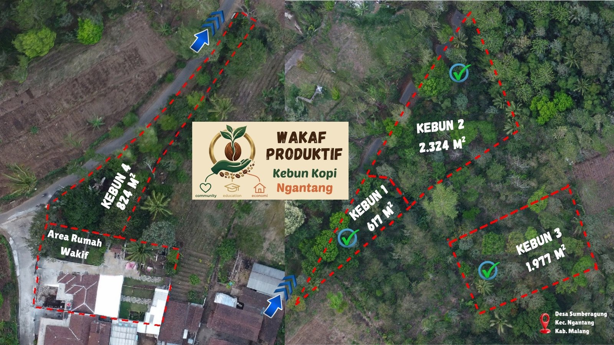

Dokumentasi visual kondisi kebun, pekerjaan tim lapangan, dan progres budidaya — sebagai bagian dari komitmen transparansi Wakaf Produktif. Setiap kunjungan diabadikan untuk akuntabilitas wakif, mitra, dan komunitas.
Visual documentation of garden conditions, field team work, and cultivation progress — part of Wakaf Produktif's transparency commitment. Every field visit is captured for accountability to waqif, partners, and community.
